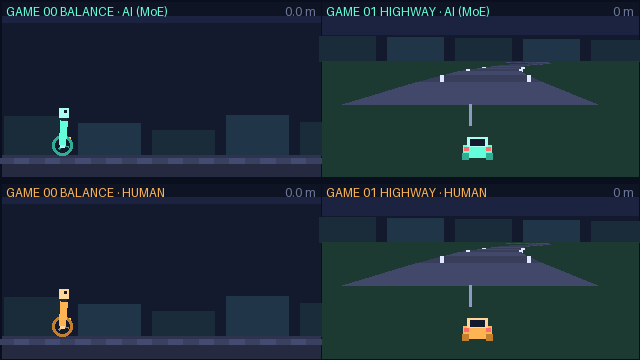

两个游戏的操作方式、状态语义、失败条件完全不同。这里用一个 Mixture-of-Experts 策略网络同时学会它们：共享底层特征 + 4 个专家 + top-2 路由， 22,473 个参数、118 KB 权重，直接在你浏览器里跑推理。 右侧面板实时显示每一帧走了哪几个专家——你会发现两个游戏几乎不共用专家。
MoE 策略与一个手写规则玩家（普通人类水平的代理）在同一个 seed、同一起点上的无尽对决。 上排青色是 AI，下排橙色是人类；汽车画面顶部的黄色 / 红色条与方向箭头表示打滑 / 爆胎中。这是模型真实训练后录制的，没有加速或剪辑。

两个游戏由同一个模型同时驱动。点击「我来玩」可用键盘接管其中一个， 另一个仍由 AI 操控——这样能直接对比你和模型的水平。
键盘：← / → 软操作，Shift + ← / → 硬操作 — 机器人：后倾 / 前倾（修正身体平衡）。汽车：左打 / 右打方向。 两关都没有终点，摔下轮子或冲出路面即结束。 手机 / 平板：画面下方会出现触摸按键，按住即操作，「硬」按住为硬档； 在 AI 模式下按任一触摸键会自动接管该游戏。
8 个 seed × 16 回合平均（训练上限 60 秒，无尽模式——成绩 = 失败前累计距离）。「失败率」指摔倒 / 冲出路面的比例。
| 策略 | 机器人距离 | 失败率 | 汽车里程 | 失败率 |
|---|
启发式规则是我手写的：机器人「倒立摆 PD 平衡——倾角与角速度加权超阈值就反向打力矩」， 汽车「按横向偏移 + 航向角 + 前瞻曲率反打方向，事件期间提前预修正」。 诚实结论：加入随机起伏地形后，平衡关 AI 学会了贴合地形节奏的主动平衡——8 个 seed 全部跑满 60 s 时限（274.4 m，与启发式持平且零摔倒）； 公路关事件机制 v3（打滑改为角载荷触发 + 冲量衰减 + 冷却期）后整体更「讲道理」： 启发式从 336.9 m 提升到 503.8 m，AI 500.4 m 与其同档（多 seed 平均相差 <1%）—— 当随机惩罚变成可学习的行为后果，简单的手写规则也能逼近上限，这本身就是个有意思的观察。
这是整个项目最有意思的部分。我没有硬性指定「专家 0 负责机器人、专家 1 负责汽车」—— 路由是模型自己学出来的。统计每一帧的门控权重后， specialization 非常干净：
| 专家 | 机器人使用率 | 分布 | 汽车使用率 | 分布 |
|---|
统计每一帧的门控权重后（见上表），两个游戏几乎完全走不同的专家， 但共享同一个底层 trunk 和同一套输出头。 这正是 MoE 在多任务上的意义：用路由替代了「两个游戏各训一个模型」。
MoE 是不是只是噱头？我训了一个参数量几乎相同的普通 MLP（20,741 vs 22,473，无专家无路由）， 用完全一样的训练流程再跑一遍。结论是：MoE 在两个游戏上都明显更好。
| 架构 | 参数量 | 机器人赛跑 | 汽车驾驶 |
|---|
普通 MLP 的两个任务梯度在同一个网络里互相干扰，成绩明显落后；具体数字见上表（由训练结果自动生成）。
多任务 PPO，两个环境各 32 个并行实例，共 500 次更新（纯 CPU）。 平衡与车道保持这类连续微调靠随机探索很难起步，所以先用启发式做行为克隆预热，再交给 PPO 微调。
汽车曲线波动很大，这是设计使然：打滑 / 爆胎是随机事件，同样的策略可能跑 100 米也可能跑 800 米。 保存的是综合得分最高的 checkpoint（机器人距离 / 150 + 汽车里程 / 400）。
小到可以直接在 JS 里手写前向：不需要 wasm 运行时，页面加载完就能玩。
train/export_onnx.py，一条命令即可导出标准 ONNX（需 pip install onnx），链路可迁到任何推理框架1.9e-6；物理引擎两端用启发式策略做统计一致性校验两个环境都是自己写的轻量物理，Python（训练）与 JavaScript（浏览器）各实现一份，共用同一套常量和积分公式。
κ(s)，无尽生成，两端一致；观测含 4 个前瞻曲率纯 CPU，单台笔记本训完两个游戏（MoE 主训练 + MLP 对照）。
# 1. 训练（行为克隆预热 + 多任务 PPO） pip install torch numpy python train/train_moe.py --updates 500 --lr 1.5e-4 # 2. 导出 ONNX、浏览器权重与页面指标 pip install onnx onnxruntime python train/export_onnx.py # 3. 生成 AI vs HUMAN 对战回放 GIF pip install pillow python train/record_gif.py
game-ai/
├── index.html 展示页
├── assets/
│ ├── js/env.js 浏览器端物理（与 Python 端同参数同公式）
│ ├── js/moe.js MoE 前向推理（零依赖手写）
│ ├── js/render.js 像素风渲染
│ ├── js/main.js 页面编排
│ ├── js/metrics.js 训练指标（由导出脚本生成）
│ └── models/ moe_weights.json · moe.onnx（可选，需 onnx 包）
└── train/
├── env.py 两个游戏的向量化环境 + 启发式基线
├── model.py MoE 策略 / MLP 对照
├── train_moe.py 多任务 PPO
└── export_onnx.py 导出与评估